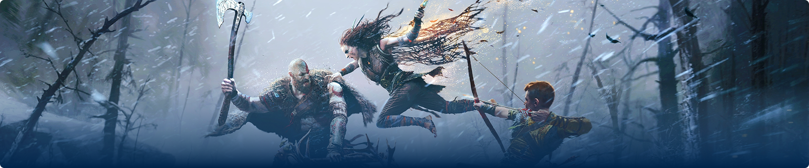
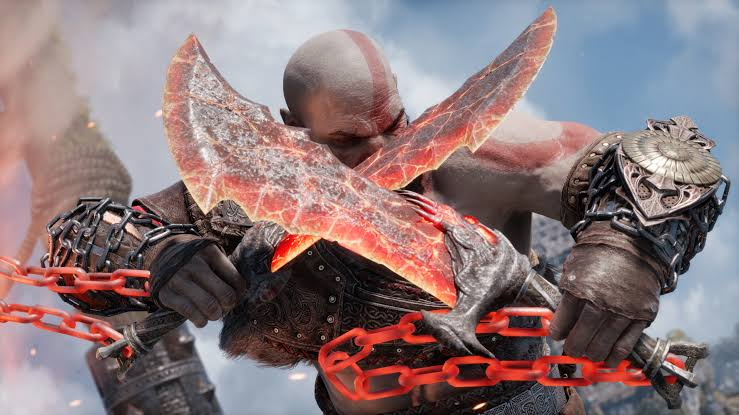

Kratos
O fantasma de esparta

Kratos é um guerreiro espartano cuja vida foi marcada pela violência, pela perda e pela busca por redenção. Após fazer um pacto com Ares, o Deus da Guerra, acabou sendo manipulado e levado a cometer atos terríveis, incluindo a morte de sua própria família. Consumido pela culpa e pela sede de vingança, enfrentou os deuses do Olimpo e acabou destruindo grande parte da mitologia grega. Anos depois, recomeçou sua vida nas terras nórdicas, onde, ao lado de seu filho Atreus, busca deixar seu passado para trás e aprender que a verdadeira força não está apenas em lutar, mas também em saber controlar a própria fúria.
Durante sua jornada pelos reinos nórdicos, Kratos enfrenta novos desafios enquanto tenta construir uma relação melhor com Atreus. Ao descobrir que seu filho está destinado a um futuro incerto, precisa ensiná-lo a sobreviver em um mundo repleto de deuses, criaturas mitológicas e perigos. Diferente de seu passado, Kratos agora luta não apenas pela própria sobrevivência, mas também para proteger aqueles que ama. Sua trajetória representa uma transformação profunda: de um guerreiro movido pela vingança para um pai que busca quebrar o ciclo de violência e construir um futuro diferente.
Você Sabia?
Conheça alguns fatos interessantes sobre o Fantasma de Esparta.
Curiosidades sobre Kratos
Kratos recebeu esse apelido após sua pele ficar marcada pelas cinzas de sua família.
Sua trajetória passa pela mitologia grega e, posteriormente, pela mitologia nórdica.
A arma foi criada pelos irmãos anões Brok e Sindri.
Uma jornada além da vingança
Descrubra mais sobre a história de Kratos e sua joranda
